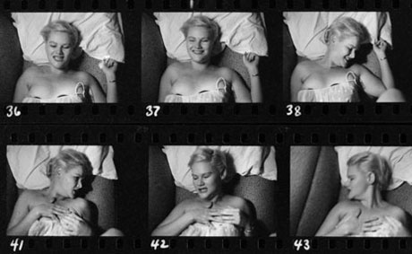

exhibition archive |
||
|  | ||
| < | ||
Kinsey’s WomenSelection of photographs from the Kinsey Institute archive November 6 – December 13, 2008 Gallery hours: Image courtesy of the Kinsey Institute, Inkjet print, 8 x 10 inches Review: |
The Wild Project Gallery is pleased to present the exhibition Kinsey’s Women in conjunction with Electric Pear Productions' U.S. Premiere of “The Sexual Neuroses of Our Parents” by Lukas Bärfuss. The exhibition Kinsey’s Women features a small selection of photographs culled from the extensive Kinsey Institute archive. Kinsey collected images in search of clues to the social history of sex. The images range from professional to amateur, with the amateur offering an often playful glimpse into a wide range of sexual experiences. One of Kinsey’s greatest revelations was that there is no such thing as normative sexuality. This insight forms the point of departure for Bärfuss’ central character Dora, who emerges with an adamant sexual hunger that pits her against a hidden and strange adult world. Kinsey’s Women makes reference to the various permutations of Dora’s journey. Dr. Alfred Charles Kinsey (1894-1956) was a biologist at Indiana University, Bloomington, who founded the Institute for Sex Research 1947, later renamed the Kinsey Institute for Research in Sex, Gender, and Reproduction. Kinsey was one of the first sex researchers who undertook a major scientific study on human sexuality. The vast research from his studies was culled in two major publications, Sexual Behavior in the Human Male (1948) and Sexual Behavior in the Human Female (1953), which became known as the Kinsey Reports. The unique history, collections, and research of The Kinsey Institute have established it as an international leader in the study of sexuality, gender, and reproduction. The Institute's mission is to maintain this leadership by developing and nurturing a community of interdisciplinary scholarship, which includes the arts, humanities, social sciences, natural sciences, medicine, education, and law. We are deeply grateful for the assistance of Catherine Johnson-Roehr, curator of the Kinsey Institute archive, without whom this exhibition would not have been possible. The Wild Project is a new environmentally conscious venue for contemporary theater, film, and visual arts. It is dedicated to supporting the arts by offering space and resources to emerging artists. Our programming intends to cultivate a supportive artistic network, explore innovative and thoughtful approaches to art making and by doing so enrich the local community. For more information please contact Hilary Schaffner at 212.228.1195 or info@thewildproject.com |
|
exhibition archive |
|||
| 2016 | 2015 | 2014 | 2013 |
| 2011 | 2010 | 2009 | 2008 |